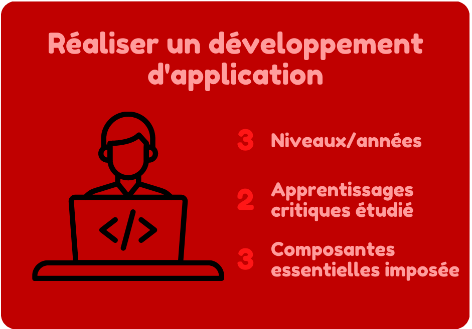
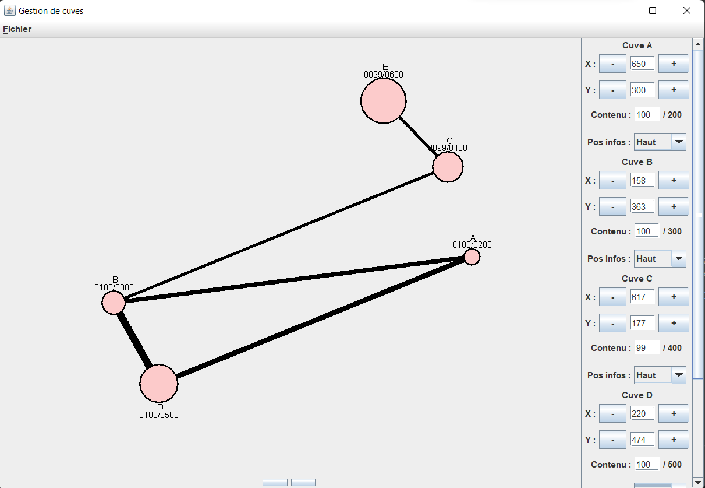

PORTFOLIO
Lemarchand Lucas B2
2021/2024
Lemarchand Lucas B2
2021/2024
De son nom entier, cette compétence se nomme : Réaliser un développement d'application. Elle s'étend sur 3 années et est la compétence numéro 1 du BUT Informatique.
toutes les composantes sous différents niveaux de maitrise (acquis/en cours/non acquis)
Durant la SAE 2.01, nous devions créer plusieurs applications en rapport avec un réseau cuves.
Afin de faire les programmes les plus optimisés possible nous avons séparé nos classes par catégories ainsi que par type de ressources à utiliser. Par exemple notre classe « Cuve » est un objet créé comme nous l’avons appris qui sera utilisé par la suite. Il y a aussi notre classe Structure qui est là pour gérer les objets cuves, leurs liens et l’écriture/lecture des fichiers textes en utilisant les ressources apprises au semestre 1. Pour finir on peut retrouver toute la partie ihm fonctionnant et utilisant les ressources vues lors de nos cours d’interface homme machine.
"Schéma de relation pour l'application n°2 de la SAE 2.01"
Je pense donc maitriser cet apprentissage critique.
Comme je vous l’ai montré pour l’apprentissage critique précédent, nous avons lors de la SAE 2.01 utilisé des conceptions simples. Maintenant je vais vous montrer que ces conceptions étaient en accord avec le besoin du client. Tout notre programme était produit en fonction du besoin du client, par exemple pour la structure de notre objet « Cuve » nous l’avons entièrement fait en fonction de la demande dans le sujet.
Pour ce qui concerne les contraintes de tailles demandées nous avons toujours fait en fonction de la demande.
Et ce n’est que des exemples, pour tout les sujets nous avons fait en sorte que ce soit comme ça, j’estime donc maitriser cet apprentissage critique
A chaque fois que je programme, j’essaie de faire le code le plus qualitatif possible. Pour cela, je respecte toutes les règles que nous avons vu en cours, comme par exemple :
- L'indentation
- Les commentaires explicatifs
- Les conventions d’écriture
"Extrait de la classe Cuve de la SAE 2.01"
Je pense avoir respecté en grande partie ce composant essentiel, cependant je pense qu’il me reste beaucoup à travailler au niveau de mes commentaires. Selon moi, ils ne sont pas toujours assez précis et je n’ai pas toujours eu le temps de les mettre, ce qui est du à un manque de vitesse.
Lors de chaque projet, des fichiers de tests ont été créés. Par exemple lors de la SAE 2.01 nous avons fait testStructures.java qui était là pour vérifier le bon fonctionnement du programme.

"Structure du programme de test de l'application n°1 en CUI de la SAE 2.01"
Je pense donc avoir respecté ce composant essentiel.
Durant la SAE 2.01 nous devions créer plusieurs interfaces utilisateurs. Celle ce l'application n°2 contenait des normes à respecter, comme par exemple la couleur des cuves qui devait être d'une différente teinture de rouge ne fonction de son contenu. C'est ce que nous avons fait comme vous pouvez le voir avec l'exemple ci-dessous.
"Application n°2 de la SAE 2.01"
Je pense donc avoir respecté ce composant essentiel.